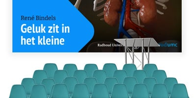

Website & animated video for a research group
Prof. Michel Vols received an ERC Starting Grant and wanted to showcase his research and team, and to build a network with other researchers. In other words, he wanted a website that could invite other researchers to work with him on his important research.
We build a unique website for him with a blog functionality and a team page eviction.eu. There they frequently post updates on the latest research. We also created an animated video that tells the story of what their research is trying to achieve. And of course we also created a presentation template for a professional look.

Infographic & scrollytelling website campaign
We’ve worked with dr. Famke Mölenberg before to create engaging infographics and videos. This time, Famke wanted to create more impact with her research on the effects of second-hand smoking in children.
Her aim was to activate policymakers, so we created a campaign to show the evidence and benefits of banning smoking from cars with children in it.
We helped to write a story and created an infographic that captured the essence of her research. We also sponsored a scrollytelling website (rijrookvrij.nl) and social media cards. It resulted in a letter to parliament and ongoing efforts to make this legislation possible.

Writing & design for a professor’s farewell address
For every scientist, also the highly regarded profs, there comes a time to say goodbye when they retire. Prof. René Bindels was no exception, and he had a nice parting event to look forward to. But even with all his experience giving lectures and presentations, René realized that his farewell lecture should be a different one.
He wanted to make impact with a story that was both reflective and insightful, one that had something to offer to his family, but also his academic peers. We worked with him to shape his story as well as the presentation slides, and the result is a clear presentation that earned him a huge applause.